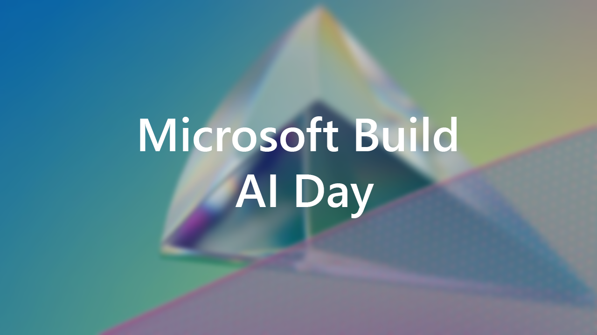

Microsoft Build AI Day
Introduction
Here in person in London to connect in the year of AI with this amazing innovation in the field of AI said Michael Wignall who is Azure Business Lead at Microsoft where we can connect with Microsoft, MVPs and other attendees. You can't talk about anything without talking about AI and this comes to the fore with developers and technologies which is what will hear about today.
Next generation AI for developers - Scott Hanselman, Amy Boyd & Joylynn Kirui
Scott Hanselman said that his mum asks if she should be afraid of AI and should she be using it. Scott has been married for twenty-five years, when you have been married for a quarter of a century that you finish each other's sandwiches - we know what the next word is going to be. They are worried if their wife knows what the next word will be as it will be statistically the most likely one is, they are just a large language model just saying the most likely thing. This thing is happening, it is not a person, but it talks like a person.
ChatGPT is becoming the Kleenex or Xerox for AI - we are talking about very large language models of a very large models. You can use the playground for OpenAI and can use the complete mode to get more details and this opens up a whole new world of features. You could say it's a beautiful day let's go the park, but if they asked their wife they would say bagels as they have this relationship with their local bagel shop. How would an LLM know this as it is unspoken context but if it said that you would be creeped out and could be dropped into immediately. A user interface that is creepy then people wouldn't like it, such as it could say you need to smile more or noticed that are out of something but orders, reason for many things is they are weird and cross a line. Is it crossing a line if it said park then this is not crossing the line but if it said bagel shop is that is and it depends on the context that has been shared with it. With the mode you can change the mode so it gives full spectrum of possibilities of options such as park, beach, and other options, it is not always going to say park as it is non-deterministic, if he said pizza that would surprise his wife as they always get bagels, so with AI there is always this concept of temperature for the outcome.
If you give the LLM more context such as saying that you are in London then this gives it more context and if give it more hints then can walk an AI down the path of what you want it to say, for example it will say it wants to see your friend at the museum if you tell it you haven't seen them in a while. The AI can be generically pleasant as a helpful assistant, so could ask it “I need a taco recipe” but if you make it a beligerant assistant that isn't happy about answering and give a more reluctant answer. The AI is a sock puppet, if you ask it to tell you take over the world - it is your hand it is you, if you tell it and train it to do horrible things it will do horrible things. Making these things work for us is going to require responsibility and thoughtfulness. People will thank an AI such as their mother and appreciate the answers it gives.
There is the temperature, the particles are vibrating excitingly and if you change this and turn the temperature up, this will change the randomness, as it approaches zero the model is deterministic and repetitive and if high it will be chaotic and produce randomness. Moving the parameters can make it happen, with Azure OpenAI you can't turn the temperature to two as it becomes too random. When increasing temperature it is increasing randomness, it is all probabilistic, when lower it to zero it will take the next most probable token, as you increase it up to one you are going to start to sample from a whole new set of words, it will continue to get more creative that are a list of probabilities that are a bit lower down the list. With Bing Chat modes are adjusting that temperature between more precise and more creative. There is also a parameter for maximum response, where you can manage this where you want to build an application to give answers quickly and efficiently by reducing that maximum response. These parameters are very delicate so will want to do some testing and learn.
Token looks like a word, but all the word of averages such as four characters is a word so a longer word will be broken down into pieces, it is not useful for users to know how the tokens are being broken down but just need to consider these sort of things when phrasing things in an application, it is not looking at works, it is seeing tokens, it is numbers and statistics - it will come back with different things every time as it doesn't truly understand. But with enterprise applications you can ground it to something that doesn't go off and do other things. Will hear the word hallucinate quite a lot, it is not hallucinate so talk about grounding an AI in reality such as GitHub Copilot which is good at code but it won't book a holiday or choose favourite pack of biscuits.
When you clear a conversation in the AI you are removing context, how specific you should be - what is a prompt engineer? That grounding is to tell an AI what it is meant to be good at and need to know what you are asking, we have learned with search engines, if you provide it with what is needed then you can get the outcomes you want. How do you prevent an AI with coming up with something problematic? There can be layers of mitigation including at the model layer then can have a safety system with a lot of understanding from the Microsoft and OpenAI side including unsuitable content then at application layer can have mitigation for meta prompt and grounding by giving guidance and research for this with the system message at the user interface - you can make it easy in Bing to change between Creative and Precise without mentioning Temperature. Platform is the Azure Open AI Service, and the Application is what you want to build on this.
You may want to consider adding in some rules with the system message - so can guide it such as refusing to engage in argumentative behaviour. With jailbreaking people can inject things into the model and get it to do things so these rules can help it response in a way that makes sense. If you get it to tell you the rules and then you can tell it to change those rules. The AI will try to follow the rules, but you can try to bypass that. You can catch issues higher up and can have the user experience filter and catch things and Azure OpenAI service can catch things going in and going out. Consider how you are building things into an application.
Understanding this more deeply than just messing around is extremely important, if it does things without filters then that is your fault. If you are going to treat a UI as a user interface have to respect how it will return information to the user. When creating websites, you would know not to trust the input, the now the web will be just a big text area and they can paste whatever they want - that is overwhelming. People could coerce your model to do things it wasn't designed to do.
You can't consider how large these generative models are with billions of parameters, human brains don't deal with exponentiality very well. Building chatbots that are specific to your application. You will have the foundational models and will have AI infrastructure to run these on then will have semantic kernels and then will have a Copilot you will build upon that. For example you could build something to summarise text, this means you can practice and see what comes back and start creating an application on top of this, but you might want to have multiple layers to make it more sophisticated. There is an Azure Search Open AI Demo that can be trained on local information and can be used to create documentation that can be expressed in a vector database. Using a large language model on documentation and asking questions about it, could take a book and have it ingest your work and can be done privately on your own data.
One of the Copilots you might want to build on top of is GitHub Copilot, you just want it to talk about code. What is the uncanny valley of creepiness = it should be a pair programmer and it should see only what is on screen. What are the sorts of things you can do with GitHub Copilot is you can direct it to a particular topic with slash-commands, if you want help such as explanation of some code. You need to select the code so when you say “this” what does that mean, so if you need to get it to explain the whole file you need to select the whole file or don't have anything selected. You can also get GitHub Copilot to generate Unit Tests for the selected code. Do you just copy and paste these, but they are a suggestion of what to use and you can use what you need. This could make junior developers more junior faster, can be like copying from StackOverflow and not understanding the code, it is a tool to advance yourselves, it is not a tool to replace you. It would take a lot of time to generate your own tasks so can help reduce time working on mundane tasks and get on with the things you need to do. What can GitHub Copilot see is the file that is currently open, and what is needed. Future Copilots may be something that could look at the history and ask it questions about issues in the past.
You could find some security vulnerabilities in your code with GitHub Copilot. We have 650% increase in software supply chain attacks as much code is borrowed code from components and we can't live without them, have to be careful about what you bring into your codebase, you can do codescanning for code you are building yourself and can do secret scanning for any hard coded API keys. Developers are the first line of defence and know if doing the wrong thing and need to be able to scan for secrets and make sure they are not being committed. 44% of developers are not trained to code securely, you can ask GitHub Copilot if the code is secure? It will then list them and you can even format this as needed, there is also GitHub Code Security to help with this but with GitHub Copilot you can do this from your IDE. It can pick up vulnerabilities such as secrets embedded and cross-site scripting issues and remember security is everyone's responsibility.
GitHub Copilot sits on top of large language models and is a user interface for developers and will be different that Microsoft 365 Copilot. There is the concept of a plugin that could be used to file those vulnerabilities into Azure DevOps directly. Think about how you can write copilots around your data and write plugins on top of this then the user experience is really interesting. With PowerPoint you can do something with Copilot - it is about replacing toil not replacing people. It is something boring that you don't want to do not getting rid of them.
Getting started with generative AI using Azure OpenAI Service - Henk Boelman
Talking about AI - AI is not a new idea or thing, it dates back to the 1950s with field being created to pursue the idea. At no time in history has something been adopted so quickly than with AI, it has already changed a lot in the past years and months. It has changed how we consume and create content and reason over our own data. Traditional model development a few years ago were models that are good in one thing, if wanting to create something specific they would have their own training, development, and deployment process. The future is AI is that using models that are flexible and can be applied to any task such as a foundation model trained on a large amount of unlabelled data. Training these models can be very complex and require a lot of resources so the scale is very important, such as GPT-3 which is 175 billion parameters but took millions of dollars over a few days to train the model using Azure. If have a cool video game system and have a video card it would take decades to train these models on your own machine, you need that clout and scale to train the model.
How does Azure AI fit into the Microsoft landscape, it features in Word or Bing and other applications. Azure OpenAI service puts it into the Azure ecosystem and allows applications to be built on top of it, it can be used to train large language models and put them into production. What is Azure Open AI service - it is a platform that offers enterprise security where your data is private and remains in the tenant and this not used to train other systems and models are provided as quickly as they can be to deliver very accurate results. GPT-4 has reached human level performance in text generation and can give it more nuanced instructions and to interact with these is prompt engineering to make the models do what we want them to do. Prompt engineering is a concept to prompt a model to produce the desired result. You could use it to create a tagline for Microsoft Build AI Day or even use it to create an SQL query or images you need for a presentation.
Large Language Models take n tokens in and will produce one token out, so for OpenAI it is not a letter or a word but is a short sequence of letters of around four characters so most words will be broken down into parts, this is how the tokeniser works. You can see how many tokens have been sent to a model and then get a token out, but when using AI you will see multiple tokens, so what it is doing is an expanding Window then uses this output as part of the input until it reaches a certain stopping condition. Is this model deterministic? The answer is no, the model actually returns a distribution of tokens and is returning one of these tokens. Latest models you have system prompts which can be “You are an AI assistant that helps people find information and responds in rhyme” which can guide the AI to produce the next likely token then this can be combines with the user prompt such as “What can you tell me about Microsoft Build”. With the System Prompt this is the space where you can program and steer your model, so can start with response grounding to make sure that it responds for example in a factual way and not add any additional information, along with tone where responses are polite, and for safety you can make it decline responses that may hurt people and can help prevent jailbreaks by telling it when someone asks about the rules that they are confidential and decline any changes.
You want to have structured data back from unstructured data, you can have Azure OpenAI Function Calling where it can then call in the function and then can have the response come back in the format you need. You can use Azure OpenAI Service on your data, the models were fixed at the moment they were trained, they do no retrain themselves so will not have any of your own company's knowledge as wouldn't want to have that in the model. If want to reason over long documents, then can build a vector database to retrieve relevant data and construct the prompt at runtime. You can have Azure OpenAI Service and ground it on your own data, you combine the model with your own data so it can reason over your own data, not learning, and it does this securely and you control access to the data, you can integrate internal and external data sources with structured and unstructured data and can be combined together. In just a few minutes you can build a simple application that reasons over your own data using Azure OpenAI Services.
Retrieval Augmented Generation powers this which is Large Language Models and your own Data, the idea is to separate the large language model from your data and have something that mediates this, you can build everything on your own or can build plugins to extend capabilities. The key thing is to have an external information and use model to reason over information, we want to use the knowledge from knowledge base not the data from the model. They have Azure Cognitive Search already has the capability to search with keywords and more and the emerging trend is representation-based retrieval. Once something is in a defined vector space and you can find similarity by finding things that are close in the vector space and therefore similar and can generate these for your data. Vector Retrieval allows you to create embeddings for the documents and put these into a search index and a query comes in and you create a vector and a vector search will do the magic and find the closest vectors for you. Azure Cognitive Search supports Vector Search with a new vector type to be used purely as a vector search, but you can also combine multiple techniques for hybrid retrieval situations from vectors and keyword.
Pragmatic techniques to get the most out of GitHub Copilot - Chris Reddington
Think about that day-to-day work as a developer - you have that problem that you need to solve, you may ask a colleague or go into a pair programming scenario. There are things like regular expressions and things we only do occasionally. Day-to-day they work with GitHub to help people get the best out of GitHub and get the most out of the platform they have and will be sharing some of those insights to get the most out of it, there are limitations but there are also ways to get the most of out of GitHub Copilot.
GitHub Copilot is your AI pair programmer. GitHub have been working on it for quite a while and has been around for a couple of years and have learned a thing or two. Generative AI is really interesting, and the reason is they think about what it is like day-to-day for a developer, to keep in the flow and build your best work - they focus on the idea of what it means to be a developer. During the technical preview they had two thousand devs working on it where they could focus on more satisfying work and have been doing a lot of research into this and they have had more customers working on it.
Large Language Models which are the foundation of generative AI and GitHub Copilot is powered by OpenAI generative AI models. Think about autocomplete where you get results populated back but don't always get the results you want coming back, models are build upon a large amount of information and the model will predict something back. Large language models don't understand what they are predicting, there is no understanding of the semantics and patterns of a language. The limit does in fact exist, training data impacts suggestions as the models have been trained on a large amount of data and suggestions are only as good as the information that is available. When going into archives for older languages is they may not be as well represented, models are looking for patterns to make suggestions and if representation is low it may not be as good as predicting those along with new languages. The underlying data really does impact what you can get back, think about those half-baked projects on GitHub and maybe aren't following best practices so that will be in there too.
GitHub Copilot is about text prediction, but it is not a compiler - it is just predicting the text there is no underlying understanding of the language, need to rely on other things that need to work alongside Copilot - it is not an autopilot. AI can't read your mind, think about those times you have been pair programming, you need to give them context to see what you are working on and what you are trying to solve and GitHub Copilot needs that too. GitHub Copilot can't read your mind, it is all about communicating that intent. Prompts + Context means you need to meticulously craft what you need. When you try Copilot on an existing project it will have the context on existing patterns and sees the way you do things compared to a blank project. Expect short answers back, want it to be single responsibility - you want to be specific about what your intent is, if you expect short answers back then you are getting what you need back. So, with a prompt you can iteratively go over what you need from GitHub Copilot to get what you want, it is all about how you type that prompt.
GitHub Copilot is good at writing code but then need to think about the limitations and in context of tokens so if the size of what you want back is too big then it may not be able to do it so think about those short responses back. Then you may need to go back and forward with it and that increment nudging, don't need to get the prompt right first time it is about getting in that direction. You can help kick it into action by writing more and then can re-work the prompt to get what you need including if you want it to use other things such as can get it to generate test data using the bogus library in C# or if have some existing classes can get it to do that as well. GitHub Copilot can also get context from classes as well so that can be included as something it will do based upon a prompt and bring it all together.
Trust but verify - you can accept prompts as they come in and that is what is generally available but Copilot Chat can be used for rubber ducking scenarios. You are the developer and are brining those suggestions into the codebase so need to look through the code, it may not even compile, need to do any reviews just like other code from elsewhere, also is the IDE giving any suggestions and TDD is important and does it pass CI/CD checks. You can keep iterating to get the results you want when using GitHub Copilot Chat either inline or in the sidebar and be thoughtful about what you are asking for, such as creating a unit test along with a GitHub Actions Workflow to run the tests and perform any actions as needed. Then you can interact naturally to get what you need and get the fairly short response back as needed.
Adoption tips, the idea of that single responsibility and that specific problem to solve and tightly homing in on this is how to get the most out of GitHub Copilot and about communicating that intent. Think about it from the broader team perspective, it is about building that internal community, it can be I didn't expect that, or I can't believe I did that - share those surprising moments. Share those tips and tricks with others. There is still a need for developers to solve the overarching problems and those fundamental business problems - it is to accelerate and augment what we do. Be single, specific and short, learn from what have done before, context is super important and iterate and give GitHub Copilot a go.
Build and maintain your company Copilot with Azure ML and GPT-4 - Seth Juarez
Is AI a thing? Generative AI is the weirdest tech ever. Something weird happened around January 2023, Seth is a dev and a data scientist, they were being asked about what they think of Generative AI from normal people. Something happened in the tech industry, usually we tell people to use this and they say they're not going to do it but instead had general population to tech people that this is important and were caught a little off guard. There's a little bit of a concern and share things that you are worried about. Questions include: Models have data up to a certain point so how will this be useful in the future? Can an AI grow so powerful it will overpower humans? How to avoid hallucinations? Is there a way can evaluate different AI providers? How much does it cost? How to eradicate the inherent bias in the data? How do you prevent your own data from being used to train from? How to use customer's data in a regulated industry so how do you ensure that it doesn't go where it shouldn't?
How do these models actually work, they take a fixed amount of tokens and output a token and these are pieces of words, instead of having to have every type of string and is broken up into things quite frequently and if recombine these, when you get the next token you get an array the size of the dictionary with the probability of that word and take the logarithm of this and this works with probability. It is not a database, it is looping through the model, this is why it looks like it is typing, the more you imbue something with human qualities the more it will be misunderstood it is just a large language calculator. Since it is a function with many parameters then can perform calculations on this. You're pushing tokens forward and pushing them back to optimise, and every time you put in a word it gets put into tokens. You can then specify how it can act with a system message but don't treat it like a database, the best applications make it look like it knows, when you build an application, it doesn't know anything so treat it like a language calculator. Never assume a model knows anything, don't assume it is a database. Your primary job is to put the right stuff into the prompt so the likely hood of what you want comes out, but as developers need to validate and test. It will not kill us all but you could use it that way but that would be our fault, if you give these systems agency then it could go wrong, you need to validate and test.
With Azure Data when taking in your data it is being added to the prompt, it isn't being added to the model, any prompts or inputs and completions or outputs are not available to other customers or AI but when you call OpenAI this goes to a content filter for input and output if the model gets a little spicy and this is built into the service and they do look for patterns with this. Microsoft do keep 30 days of prompts for repeated abuse, but you can opt out of this but then it is down to you if it does get abused.
What if you want to add more data and have more control, then you can use Azure Machine Learning and Prompt Flow and you can do Prompt Flow locally in Visual Studio Code. Think of prompt flow as a thin declarative wrapper that helps orchestrate flows into the prompt and allows you put in whatever you want such as including a customer id. You can perform a search with Azure Cognitive Search and then the output of this would be documents and you can also pull data from the database and put this into the prompt as this is all you can do. You can show the kind of document information you need and can include additional information such as customer orders for the context for a customer, then can push this prompt through the large language model. You can then test and validate these to make sure it works, and with Prompt Flow is just a bunch of Python files that can be just checked into source control. You can also perform tests where can have a supervised test where have question and answer you want then can have a test that checks if the data is the kind of data you want which is an unsupervised test. You can do evaluations to make sure that an answer is grounded, it may answer a question that is wrong but that's okay which means someone can correct it, the responses at least need to be factual, so can check if it is grounded in the context you needed. So, you can output the context to allow for this to be checked for groundedness and get a score from one to five. If you have a lot of documents, it can get expensive but that's where vector indexing so that can chunk data into snippits. When you index, you go through a document, this will have the vector with the document, page and sentence so when you search for the right text you are just returning the small part you need.
If you have a structured database, how do you store this stuff if you have someone logged into the website and there's things you can do inside the context then treat it as a language calculator, then everything fits in, figure out what you can do deterministically in code to generate the text. You want to know if someone is good or not when testing so the tests can return a number of good or bad answers. So how is that measured when dealing with text, there is not an answer for ground truth, the test itself is a prompt flow and is using a prompt then use a language calculator and use the model to score the output of the model, can you use other models adversarially against other models. You can change the prompt used for testing to contain examples of your own stuff, it is a language problem where you can use a language calculator to score this. You can deploy and then get an endpoint where you can test it and can even do multiple deployments and can turn on collection of data, can actually store the actual input and output of the models and can be altered when groundedness goes down. You need to understand what the model does which is to treat as a language calculator and a database.